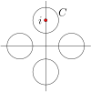
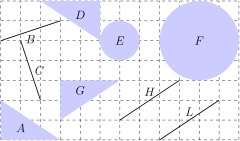

A collection \(G\) of transformations of a set \(A\) is called a group of transformations if \(G\) has the following three properties:
Identity: \(G\) contains the identity transformation \(T:A \to A\) defined by \(T(a) = a\) for all \(a \in A\text{.}\)
Closure: If \(T\) and \(S\) are two transformations in \(G\text{,}\) then the composition \(T \circ S\) is in \(G\text{.}\)
Inverses: If \(T\) is in \(G\text{,}\) then the inverse \(T^{-1}\) is in \(G\text{.}\)
The reader who has seen group theory will know that in addition to the three properties listed in our definition, the group operation must satisfy a property called associativity. In the context of transformations, the group operation is composition of transformations, and this operation is always associative: if \(R,S\text{,}\) and \(T\) are transformations of a set \(A\text{,}\) then the transformation \((R \circ S) \circ T\) equals the transformation \(R
\circ (S \circ T)\text{.}\) So, in the present context of transformations, we omit associativity as a property that needs checking.
Example4.1.2Group of translations
Let \(\cal T\) denote the collection of all translations of the plane \(\mathbb{C}\text{.}\) In particular, for each \(b \in \mathbb{C}\text{,}\) let \(T_b: \mathbb{C} \to \mathbb{C}\) denote the translation \(T_b(z) = z + b\text{.}\) The set \(\cal T\) consists of all \(T_b\text{,}\) for all \(b \in \mathbb{C}\text{.}\) That is,
To verify \(\cal T\) forms a group, we must check the three properties.
\(\cal T\) contains the identity: Since \(0 \in \mathbb{C}\text{,}\) \({\cal T}\) contains \(T_0(z) = z + 0
= z\text{,}\) which is the identity transformation of \(\mathbb{C}\text{.}\)
\(\cal T\) has closure: Suppose \(T_b\) and \(T_c\) are in \(\cal T\text{.}\) Then \(T_b \circ T_c(z) = T_b(z + c) = (z+c)+b = z +
(b+c)\text{.}\) But this map is exactly the translation \(T_{b+c}\text{,}\) which is in \(\cal T\) since \(b + c \in \mathbb{C}\text{.}\) Thus, the composition of two translations is again a translation. Notationally, we have shown that \(T_b \circ T_c(z) = T_{b+c}(z)\text{.}\)
\(\cal T\) contains inverses: Suppose \(T_b\) is in \(\cal T\text{,}\) and consider \(T_{-b}\text{,}\) which is in \(\cal T\) since \(-b \in \mathbb{C}\text{.}\) Note that \(T_b \circ T_{-b}(z) = T_b(z
- b) = (z - b)+b = z\text{,}\) and \(T_{-b}\circ T_b(z) = T_{-b}(z+b) = (z
+ b)-b = z\text{.}\) Thus, \(T_{-b}\) is the inverse of \(T_b\text{,}\) and this inverse is in \(\cal T\text{.}\) Notationally, \(T^{-1}_b = T_{-b}\text{:}\) the inverse of translation by \(b\) is translation back by \(-b\text{.}\)
Definition4.1.3
Let \(S\) be any set, and \(G\) a group of transformations on \(S\text{.}\) The pair \((S,G)\) is called a geometry. A figure in the geometry is any subset \(A\) of \(S\text{.}\) An element of \(S\) is called a point in the geometry. Two figures \(A\) and \(B\) are called congruent, denoted \(A \cong B\text{,}\) if there exists a transformation \(T\) in \(G\) such that \(T(A) = B\text{.}\)
Although a figure in a geometry \((S,G)\) is defined to be a subset of \(S\text{,}\) we make one abuse of notation and sometimes treat points as figures. For instance, we might write \(a \cong b\) for two points \(a\) and \(b\) in \(S\) when, formally, we mean \(\{a\} \cong \{b\}\text{.}\) Incidentally, \(a \cong b\) in the geometry \((S,G)\) means there exists a transformation \(T \in G\) such that \(T(a) = b\text{.}\)
Let's look at some examples now to help sort through these definitions.
Example4.1.4Finite group of rotations
Consider the set \(H = \{R_0, R_{\pi/2}, R_{\pi}, R_{3\pi/2}\}\) consisting of four rotations of \(\mathbb{C}\) about the origin (by 0, \(\pi/2\text{,}\) \(\pi\text{,}\) and \(3\pi/2\) radians). We observe first that \(H\) forms a group. Since \(R_0(z)=e^{i0}z = z\text{,}\) \(H\) contains the identity transformation on \(\mathbb{C}\text{.}\) The set also satisfies closure, and the reader can check all possible compositions. For instance, \(R_{3\pi/2} \circ R_{\pi} = R_{\pi/2}\text{.}\) Finally, the inverse of each transformation in \(H\) is again in \(H\text{.}\) Check that \(R_0^{-1} = R_0\text{,}\) \(R_{\pi/2}^{-1} = R_{3\pi/2}\text{,}\) \(R_\pi^{-1} = R_\pi\text{,}\) and \(R_{3\pi/2}^{-1} = R_{\pi/2}\text{.}\) Thus, \(H\) is a group and we may study the geometry \((\mathbb{C},H)\text{.}\) For instance, is the circle \(C\) given by \(|z-i|=.5\) congruent to the circle \(D\) given by \(|z| = .5\text{?}\) Well, is there a transformation in \(H\) that maps \(C\) onto \(D\text{?}\) No! The only four circles congruent to \(C\) are pictured below. These are found by rotating \(C\) about the origin by 0, \(\pi/2\text{,}\) \(\pi\text{,}\) or \(3\pi/2\) radians, the only allowable transformations in this geometry.

Notice also that any point \(z \neq 0\) is congruent to four points: \(z\text{,}\) \(e^{i\pi/2}z\text{,}\) \(e^{i\pi}z\text{,}\) and \(e^{i3\pi/2}z\text{.}\) How many points are congruent to \(z = 0\text{?}\) Are all lines congruent in this geometry? Nope. We are only allowed these few rotations, so we have no way to map the line \(y=x\text{,}\) say, to the line \(y=x+1\text{.}\)
Example4.1.5A two-element group
Consider reflection of \(\mathbb{C}\) across the real axis, given by \(r(z) = \overline{z}\text{.}\) Since \(r \circ r\) is the identity map, the set \(G = \{1,r\}\) is a group of transformations on \(\mathbb{C}\text{,}\) and we may define the geometry \((\mathbb{C},G)\text{.}\) Notice that while \(3+i\) is congruent to \(3-i\) in this geometry, it is not congruent to \(-3+i\text{.}\) Also, the circle \(|z-2i|=1\) is congruent to the circle \(|z+2i|=1\) but not the circle \(|z-3i|=1\text{.}\)
Example4.1.6Translational geometry
Let \(\cal T\) denote the group of translations in Example 4.1.2, and consider the geometry \((\mathbb{C}, {\cal T})\text{.}\) We call this geometry translational geometry. Which figures in Figure 4.1.7 are congruent in this geometry?
Remember, two figures are congruent if we can find a transformation that “moves” one figure on top of the other. Since our allowable moves here are translations, we cannot change the radius of a circle (that's a dilation), and we cannot rotate objects. So, in translational geometry the only figures congruent in Figure 4.1.7 are \(H\) and \(L\text{.}\)
Figure4.1.7 Figures in the plane.
Definition4.1.8
A collection \(\cal D\) of figures in a geometry \((S,G)\) is called an invariant set if, for any figure \(A\) in \(\cal D\) and any transformation \(T\) in \(G\text{,}\) \(T(A)\) is also in \(\cal D\text{.}\) A function \(f\) defined on \(\cal D\) is called an invariant function if \(f(B) = f(T(B))\) for any figure \(B\) in \(\cal D\) and any transformation \(T\) in \(G\text{.}\)
For instance, suppose \({\cal D}\) is the set of all lines in \(\mathbb{C}\text{.}\) Let \(f\) be the function that takes a line to its slope. In translational geometry, \((\mathbb{C}, {\cal T})\text{,}\) the set \(\cal D\) of all lines is an invariant set because if \(A\) is any line, then so is its image, \(T(A)\text{,}\) under any translation \(T\) in \(\cal T\text{.}\) Furthermore, \(f\) is an invariant function because any translation of any line preserves the slope of that line.
Of course, two figures in an invariant set need not be congruent. For instance, in translational geometry the set \(\cal D\) of all lines is an invariant set, although if lines \(A\) and \(B\) in \(\cal D\) have different slopes then they are not congruent. This feature of the set \(\cal D\) makes it seem too big, in some sense. Can invariant sets be more exclusive, containing only members that are congruent to one another? You bet they can.
Definition4.1.9
A set of figures \(\cal D\) in a geometry is called minimally invariant if no proper subset of it is also an invariant set.
For instance, the set of all lines is not a minimally invariant set in translational geometry because it has proper subsets that are also invariant sets. One such subset consists of all lines with slope 8.
Theorem4.1.10
An invariant set \(\cal D\) of figures in a geometry \((S,G)\) is minimally invariant if and only if any two figures in \(\cal D\) are congruent.
First assume \(\cal D\) is a minimally invariant set in the geometry \((S,G)\text{,}\) and suppose \(A\) and \(B\) are arbitrary figures in \(\cal D\text{.}\) We must show that \(A \cong B\text{.}\)
We begin by constructing a new set of figures, the one consisting of \(A\) and all transformations of \(A\text{.}\) In particular, define
Notice that for any \(T \in G\text{,}\) \(T(A)\) is in the set \(\cal D\) since \(\cal D\) is invariant. This means that \({\cal A}\) is a subset of \(\cal D\text{.}\)
Furthermore, \(\cal A\) itself is an invariant set, thanks to the group nature of \(G\text{.}\) In particular, if \(C\) is any member of \(\cal A\text{,}\) then \(C = T_0(A)\) for some particular \(T_0\) in \(G\text{.}\) Thus, applying any transformation \(T\) to \(C\text{,}\)
\begin{equation*}
T(C) = T(T_0(A)) = T \circ T_0(A)
\end{equation*}
and since \(T \circ T_0\) is again a transformation in \(G\text{,}\) \(T \circ T_0(A)\) lives in \(\cal A\text{.}\)
So we've established two facts: (1) \(\cal A\) is a subset of \(\cal
D\text{,}\) and (2) \(\cal A\) is an invariant set. Since \(\cal D\) is a minimally invariant set it follows by definition that \({\cal A} = {\cal D}\text{.}\) This means that the given set \(B\text{,}\) which is in \(\cal D\text{,}\) is also in \(\cal A\text{.}\) That is, \(A \cong B\text{.}\)
The proof of the other direction is left as an exercise for the reader.
The proof of Theorem 4.1.10 illustrates a convenient way to find minimally invariant sets: If \(A\) is a figure in \((S,G)\text{,}\) then \({\cal A} = \{ T(A) ~|~ T \in G\}\) is a minimally invariant set.
Example4.1.11Euclidean geometry
Euclidean geometry is the geometry \((\mathbb{C}, \cal{E})\text{,}\) where \(\cal{E}\) consists of all transformations of the form \(T(z) = e^{i\theta}z + b\text{,}\) where \(\theta\) is a real number and \(b\) is in \(\mathbb{C}\text{.}\) Note that \(\cal E\) consists of precisely those general linear transformations of the form \(T(z) = az+b\) in which \(|a| = 1\text{.}\) In the exercises, you check that this collection is indeed a group of transformations.
The group \(\cal{E}\) includes rotations and translations, but not dilations. Let's take a look at some familiar properties of objects that should be invariant in Euclidean geometry.
The Euclidean distance between two points \(z_1\) and \(z_2\) is defined to be \(|z_1
- z_2|\text{.}\) To show that this is an invariant function of \((\mathbb{C},
\cal{E})\text{,}\) we need to show that for any \(T\) in the group \(\cal E\text{,}\) the distance between \(z_1\) and \(z_2\) equals the distance between \(T(z_1)\) and \(T(z_2)\text{:}\)
Thus, Euclidean distance is preserved in \((\mathbb{C}, \cal{E})\text{.}\)
Angles are preserved as well. We have already proved that general linear transformations preserve angles (Theorem 3.1.12), and Euclidean transformations are general linear transformations, so angles are preserved in \((\mathbb{C}, \cal{E})\text{.}\)
Definition4.1.12
A geometry \((S,G)\) is called homogeneous if any two points in \(S\) are congruent, and isotropic if the transformation group contains rotations about each point in \(S\text{.}\)
Example4.1.13Homogeneous geometry
Translational geometry \((\mathbb{C},{\cal T})\) is homogeneous because there is a translation that will map any point of \(\mathbb{C}\) to any other point of \(\mathbb{C}\text{.}\) That is, any two points of \(\mathbb{C}\) are congruent. Of course, without rotations, translational geometry is not isotropic. Here's a formal argument that \((\mathbb{C},{\cal T})\) is homogeneous:
Suppose \(p\) and \(q\) are arbitrary points in \(\mathbb{C}\text{.}\) We must find a translation \(T\) in \(\cal{T}\) such that \(T(p) = q\text{.}\) Let \(w = q -
p\text{,}\) and consider the translation \(T_w\) in \(\cal{T}\text{.}\) Then \(T_w(p) = p + w = p + (q - p) = q\text{.}\) Thus \(T_w(p) = q\) and \(p \cong q\text{.}\) Since \(p\) and \(q\) are arbitrary points in \(\mathbb{C}\) it follows that \((\mathbb{C},\cal{T})\) is homogeneous.
Euclidean geometry \((\mathbb{C},\cal{E})\) is homogeneous since it contains all translations, but the geometries of Example 4.1.4 and Example 4.1.5 are not.
Definition4.1.14
A metric for a geometry \((S,G)\) is an invariant function \(d:S \times S \to \mathbb{R}\) mapping each ordered pair \((x,y)\) of elements from \(S\) to a real number such that
\(d(x,y) \geq 0\) for all \(x,y \in S\) and \(d(x,y) = 0\) if and only if \(x = y\text{.}\)
\(d(x,y) = d(y,x)\) for all \(x,y \in S\text{.}\)
(Triangle inequality) \(d(x,z) \leq d(x,y) + d(y,z)\) for all \(x,y,z \in S\text{.}\)
Example4.1.15Euclidean metric
The Euclidean metric is defined by \(d(z,w)=|z-w|\text{.}\) We have already shown that \(d\) is preserved under Euclidean transformations, and the first two conditions of being a metric follow directly from the definition of modulus. We establish the triangle inequality by direct computation in the following lemma.
Lemma4.1.16
For any points \(z, w, v\) in \(\mathbb{C}\text{,}\)
If \(v = w\) then the the result holds, so we assume \(v \neq w\text{.}\) Since \(d\) is invariant under Euclidean transformations, we may assume that \(v = 0\) and \(w = r > 0\) is a point on the positive real axis. (Translate the plane by \(-v\) to send \(v\) to 0, and then rotate about 0 until the image of \(w\) under the translation lands on the positive real axis.) Thus, it's enough to show that for any complex number \(z\) and any positive real number \(r\text{,}\)
\begin{equation*}
|z - r| \leq |z| + r.
\end{equation*}
Find a particular translation to prove that in Figure 4.1.7 \(H \cong L\) in translational geometry.
2
Let \(\cal A\) be the set of all circles in \(\mathbb{C}\) centered at the origin, and let \(G\) be the set of all inversions about circles in \(\cal A\text{.}\) That is,
\begin{equation*}
G = \{i_C ~|~ C \in {\cal A} \}
\end{equation*}
Is \(G\) a group of transformations of \(\mathbb{C}^+\text{?}\) Explain.
3
Prove that the group \(\cal{E}\) of Euclidean transformations of \(\mathbb{C}\) is indeed a group.
4
Let \(G\) be the set of all dilations of \(\mathbb{C}^+\text{.}\) That is
\begin{equation*}
G = \{ T(z) = kz ~|~ k \in \mathbb{R}, k > 0 \}.
\end{equation*}
Is \(G\) a group of transformations of \(\mathbb{C}^+\text{?}\) Explain.
5
True or False? Determine whether the statement is true or false, and support your answer with an argument.
a. Any two lines are congruent in Euclidean geometry \((\mathbb{C},\cal{E})\text{.}\)
b. Any two circles are congruent in Euclidean geometry \((\mathbb{C},
\cal{E})\text{.}\)
6
Prove that if a set of figures \(\cal D\) is invariant in a geometry \((S,G)\text{,}\) and any two figures in \(\cal D\) are congruent, then \(\cal D\) is minimally invariant.
7
Describe a minimally invariant set of translational geometry that contains the figure \(D\) from Figure 4.1.7.
8
Rotational geometry is the geometry \((\mathbb{C}, {\cal R})\) where \({\cal R}\) is the group of rotations about the origin. That is
a. Prove that \(\cal R\) is a group of transformations.
b. Is \({\cal D} = \{\)all lines in \(\mathbb{C}\}\) an invariant set in rotational geometry? Is it a minimally invariant set?
c. Find a minimally invariant set of rotational geometry that contains the circle \(|z-(2+i)| = 4\text{.}\)
d. Is \((\mathbb{C}, {\cal R})\) homogeneous? Isotropic?
9
Prove that the function \(v(z_1,z_2) = z_1 - z_2\) is invariant in translational geometry \((\mathbb{C},{\cal T})\) but not rotational geometry \((\mathbb{C},{\cal R})\text{.}\)
10
Prove that the following function is a metric for any geometry \((S,G)\text{.}\)
\begin{equation*}
d(x,y) =
\begin{cases}0 \amp \text{ if \(x=y\); } \\
1 \amp \text{ if \(x\neq y\). }
\end{cases}
\end{equation*}
11
Prove that \((\mathbb{C}, \cal{E})\) is isotropic. That is, show the group \(\cal E\) contains all rotations about all points in \(\mathbb{C}\text{.}\)
12
Which figures from Figure 4.1.7 are congruent in \((\mathbb{C}, \cal{E})\text{?}\)
13
Let's create a brand new geometry, using the set of integers \(\mathbb{Z} = \) \(\{\ldots, -2, -1, 0, 1, 2, \ldots\}\text{.}\) For each integer \(n\text{,}\) we define the transformation \(T_n: \mathbb{C} \to \mathbb{C}\) by \(T_n(z) = z + n i.\) Let \(G\) denote the set of all transformations \(T_n\) for all integers \(n\text{.}\) That is, \(G = \{T_n ~|~ n \in \mathbb{Z}\}.\)
a. Prove that \((\mathbb{C}, G)\) is a geometry.
b. Consider the set of figures \({\cal D}\) consisting of all lines in the plane with slope 4. Is \(\cal D\) an invariant set of \((\mathbb{C}, G)\text{?}\) Is it minimally invariant? Explain.
c. My favorite line, for clear and personal reasons, is \(y = x + 8\text{.}\) Please describe a minimally invariant set of figures containing this line.
d. Determine the set of points in \(\mathbb{C}\) congruent to \(i\) in this geometry. Is \(\mathbb{C}\) homogeneous?